# Additional packages for this chapter beyond the shared setup.
extra_packages <- c("raster", "lattice", "rayimage", "viridis")
# Fail fast with a clear message if any required package is missing.
missing_packages <- extra_packages[
!vapply(extra_packages, requireNamespace, logical(1), quietly = TRUE)
]
if (length(missing_packages) > 0) {
stop(
"Missing R packages: ",
paste(missing_packages, collapse = ", "),
". Install them first (e.g. install.packages(...)) before rendering."
)
}
# Load packages only after checks pass.
invisible(lapply(extra_packages, library, character.only = TRUE))🌋 Practical Creating Worlds
Introduction
Welcome, brave explorer of virtual worlds! Today, you’ll learn how to create entire landscapes (no pressure!) using R. We’ll shrink the universe to an experimental size, start with one island and gradually add more complexity; from rugosity to temperature, and even sea level changes.
In this tutorial, we will:
- Create a spatial grid (our world map).
- Add random elevation and temperature (because flat worlds are boring).
- Visualize your masterpiece (watch your creation come to life).
- Modify the shape and dynamics of your island (why stop here?).
- Prepare your world for Gen3sis (ready for simulation?).
- Run a simulation (let there be life!).
Step 1: Setup (Gather Your Tools)
Before we build our world, let’s make sure we have the right tools. No one builds a universe without a hammer… and a bunch of other R-packages.
Step 2: Declare your functions (Make your tools)
Now that our libraries are ready, we need tools to help us generate the world. Below are custom functions to plot the terrain (plot_persp), simulate shape (drop and gaussian_2d), and generate random landscapes (random_landscape). These functions allow us to manipulate and visualize spatial grids with elevation data.
plot_persp <- function(x, y, z, lcol=topo.colors, ...) {
# Average each 2x2 cell so colors represent facets in the 3D surface.
zz <- (z[-1,-1] + z[-1,-ncol(z)] + z[-nrow(z),-1] + z[-nrow(z),-ncol(z)])/4
# Build adaptive color bins from the distribution of facet elevations.
breaks <- hist(zz, plot=FALSE)$breaks
cols <- lcol(length(breaks)-1)
zzz <- cut(zz, breaks=breaks, labels=cols)
persp(x, y, z, col=as.character(zzz),
phi=30, theta=-25, ltheta = -70,
expand = 0.5, border = NA, box = FALSE, shade = 0.75, ...)
# list(breaks=breaks)
}
# 'shape
drop <- function(x,y, a=3, ...) {
r <- sqrt(x^2+y^2)
# Avoid division by zero at the center point.
r[r==0] <- 1
z <- a * sin(r)/r
}
gaussian_2d <- function(x,y, x0, y0, sdx, sdy, a) {
# Exponent term of a 2D Gaussian centered at (x0, y0).
r <- (((x-x0)^2)/(2*sdx^2))+(((y-y0)^2)/(2*sdy^2))
# 'a' controls peak height; larger sdx/sdy produce broader, flatter islands.
z <- a*exp(-r)
return(z)
}
# 'generator
random_lanscape <- function(x,y, n=2){
# Build a noisy surface by summing n random Gaussian "bumps".
zf <- 0
for (i in 1:n){
# Random center, spread, and amplitude for each bump.
zf <- zf+outer(x, y, gaussian_2d, x0=sample(x,1), y0=sample(y,1), sdx=rnorm(1,2,5), sdy=rnorm(1,2,5), a=rnorm(1,2,2))
}
return(zf)
}
set_landscape_t <- function(
x = seq(-10, 10, length = 60), # x-axis coordinates of the grid
y = NA, # y-axis coordinates; if NA, use same values as x
t = -4:0, # time values (or scenario values) to loop over
x0t = function(t) { rep(0, length(t)) }, # center x-position as a function of t
y0t = function(t) { rep(0, length(t)) }, # center y-position as a function of t
sdxt = function(t) { 2 / (abs(t) + 1) }, # x spread (sdx) as a function of t
sdyt = NA, # y spread (sdy); if NA, reuse sdxt
at = function(t) { abs(t) + 1 } # amplitude (height) as a function of t
) {
# If y is not provided, use a square grid by setting y equal to x.
if (any(is.na(y))) {
y <- x
}
# If sdyt is not provided, use the same spread function for y as for x.
if (any(is.na(sdyt))) {
sdyt <- sdxt
}
# Initialize output list (one matrix per time step).
l <- list()
# Loop over each time value in t.
for (i in 1:length(t)) {
ti <- t[i]
# Generate one landscape matrix using gaussian_2d on the x-y grid.
# outer() evaluates gaussian_2d for all x-y combinations.
l[[i]] <- outer(
x, y, gaussian_2d,
x0 = x0t(ti),
y0 = y0t(ti),
sdx = sdxt(ti),
sdy = sdyt(ti),
a = at(ti)
)
# Add a descriptive name so each landscape records its parameter values.
names(l)[i] <- paste0(
"x0=", x0t(ti),
"|y0=", y0t(ti),
"|sdx=", sdxt(ti),
"|sdy=", sdyt(ti),
"|a=", at(ti)
)
}
# Return the list of landscape matrices.
return(l)
}Every world (i.e raster) needs a grid to hold it together. We will work without a coordinate system in a simple 1 unit grid. This will allow us to focus on the shape of the landscape without worrying about real-world problems (distortion).
# size of the grid
nlg <- 1
### single simple -----
# Build a regular square grid (1 unit cell size) and place one Gaussian island.
x <- seq(-20, 20, by=nlg)
y <- x
z <- outer(x, y, gaussian_2d, x0=0, y0=0, sdx=2, sdy=2, a=10)
plot_persp(x, y, z)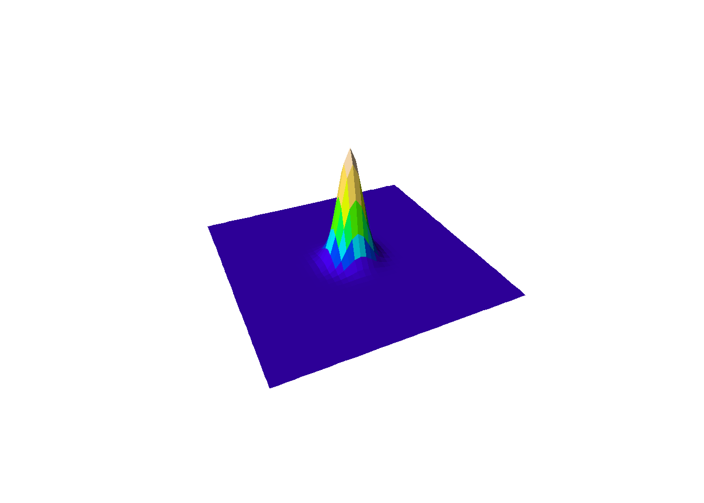
Next, let’s make it funky…
The drop function can be used to create a terrain similar to an island by generating a peak that gradually descends towards the edges. This creates a radial pattern of decreasing elevation, much like a small volcanic island with surrounding lagoons. While this isn’t a very realistic model, its fun 🤓.
### single simple drop -----
# Alternative "volcanic" style island shape using a radial drop-off function.
z <- outer(x, y, drop, x0=20, y0=20, a=10)
plot_persp(x, y, z)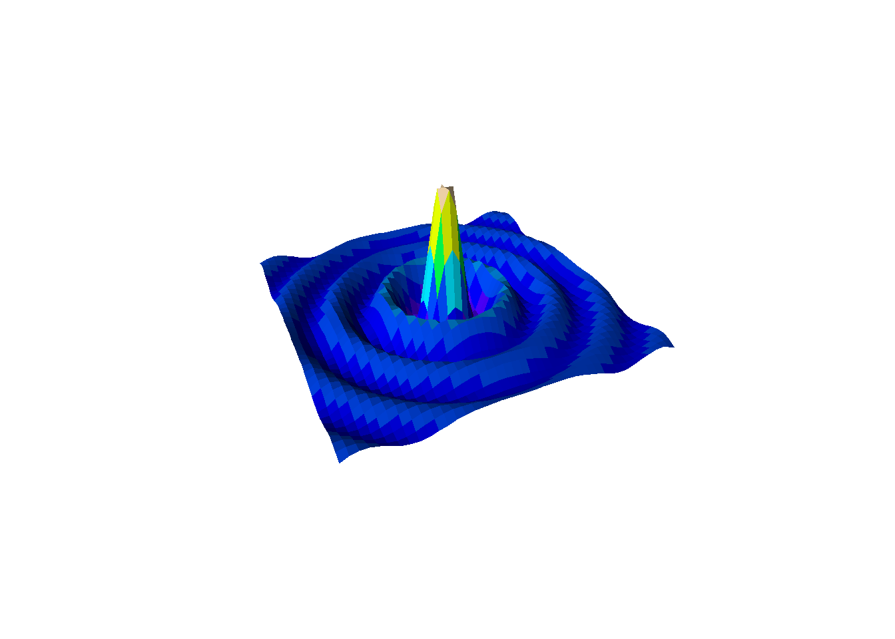
Step 3: Create a dynamic landscape
Now, let’s make it dynamic! Here we use time (ti) as the input to dynamically adjust the standard deviation in the Gaussian function. Our temporal unit is time-step and cells are our spacial units.
For clarity: each grid cell in this synthetic example is 1 x 1 arbitrary unit (not kilometers), and each time-step is an abstract model step. When you change spatial or temporal resolution, you typically need to retune dispersal, speciation, and environmental change parameters accordingly.
### multiple -----
l <- list()
for (ti in 1:6){ # set the number of time steps
# Increase spread through time; reduce height so total mass stays comparable.
l[[ti]] <- outer(x, y, gaussian_2d, x0=0, y0=0, sdx=ti, sdy=ti, a=ti^-0.8)
# Clamp minimum elevation to mimic a constant sea-level baseline.
l[[ti]][l[[ti]]<0.1] <- 0.1
}Build Your Own Tools Again, forget about steps…
The process of creating and refining tools never stops in world-building. It would be nice to have a function to plot multiple landscapes no? Below is a function to plot multiple landscapes at different time steps in one visualization.
plot_multiple_persp <- function(l, lcol = topo.colors, scol = "darkblue", legend_title = "Legend", ...) {
# 'l' is a list of elevation matrices (one matrix per time step).
# Flatten all values across time to use one shared color scale.
lv <- do.call(c, l)
breaks <- hist(lv, plot = FALSE)$breaks
cols <- c(scol, lcol(length(breaks) - 2))
# Save the original par settings
oldpar <- par(no.readonly = TRUE)
on.exit(par(oldpar))
# Number of subplots
times <- length(l)
# Dynamically define number of rows and columns for layout based on the number of steps
n_cols <- ceiling(sqrt(times)) # Number of columns
n_rows <- ceiling(times / n_cols) # Number of rows
# Set the plot margins: Adjust `mar` to make the plots closer to each other
par(mar = c(2, 2, 2, 2)*0.3) # Reduce margins around each plot
# Set the layout for the subplots (without extra row for legend)
par(mfrow = c(n_rows, n_cols))
# Loop through the list of z-matrices and create the persp plots
for (i in seq_along(l)) {
zi <- l[[i]]
zz <- (zi[-1, -1] + zi[-1, -ncol(zi)] + zi[-nrow(zi), -1] + zi[-nrow(zi), -ncol(zi)]) / 4
zzz <- cut(zz, breaks = breaks, labels = cols)
# Plot each 3D surface with persp
persp(x, y, zi,
zlim = range(lv, na.rm = TRUE),
col = as.character(zzz),
phi = 30, theta = -25, ltheta = -70,
expand = 0.5, border = NA, box = FALSE, shade = 0.25, ...)
# Add titles if names are available
if (!any(is.na(names(l)))) {
title(names(l)[i])
}
# If it's the first plot, add a color scale (legend) on top of it
if (i == 1) {
# Use a small inset to add the legend (e.g., top-right corner)
legend("topright", legend = round(breaks, 2), fill = cols, title = legend_title, cex = 0.7, inset = 0.05)
}
}
}See the landscape you’ve crafted take shape in all its 3D glory
Use your new tool to visualize the dynamic landscape you’ve created.
plot_multiple_persp(l, lcol=terrain.colors)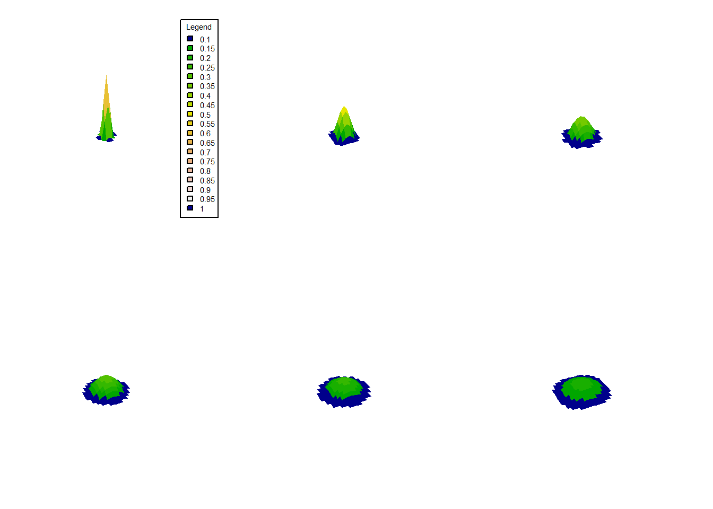
Add more islands!
It’s time to create more complex terrains by adding multiple islands. We can simulate this by layering multiple Gaussian functions. In this example we will simply add the z values
par(mfrow=c(1,3), mai=c(1,1,1,1)*0.3)
# First island
z1 <- outer(x, y, gaussian_2d, x0=-10, y0=10, sdx=4, sdy=4, a=7)
plot_persp(x, y, z1, main="z1")
# Second island
z2 <- outer(x, y, gaussian_2d, x0=10, y0=-10, sdx=5, sdy=6, a=5)
plot_persp(x, y, z2, main="z2")
# Combine the two islands
zf <- z1 + z2
plot_persp(x, y, zf, main="z1 + z2")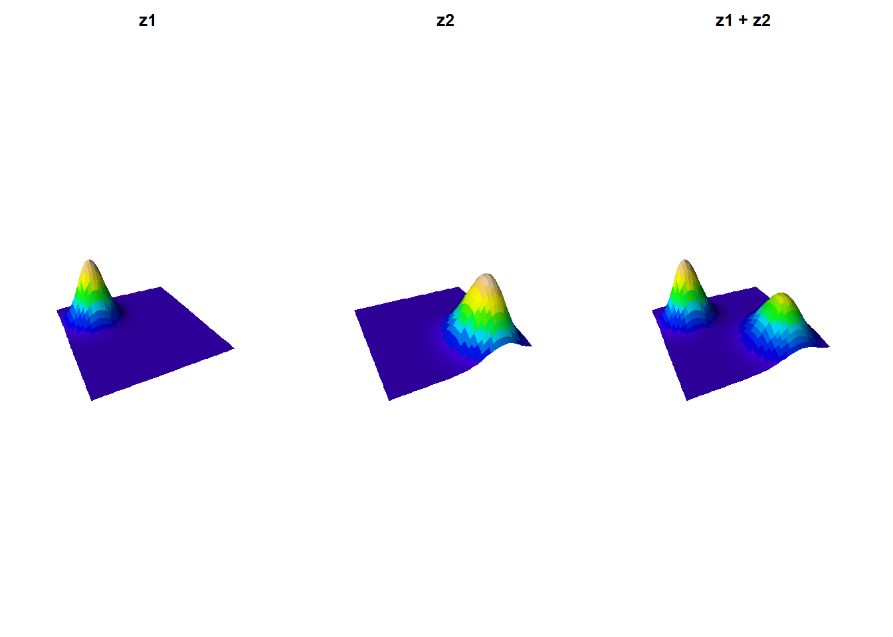
Now let’s use the same concept to create a time-evolving landscape with three islands. And see how the islands will grow and change over time.
# Create a time-evolving landscape
l <- list(z1 = zf,
z2 = zf + outer(x, y, gaussian_2d, x0 = 0, y0 = -3, sdx = 2, sdy = 2.5, a = 3),
z3 = zf + outer(x, y, gaussian_2d, x0 = 0, y0 = -3, sdx = 2.5, sdy = 2.8, a = 4))
plot_multiple_persp(l, lcol=terrain.colors)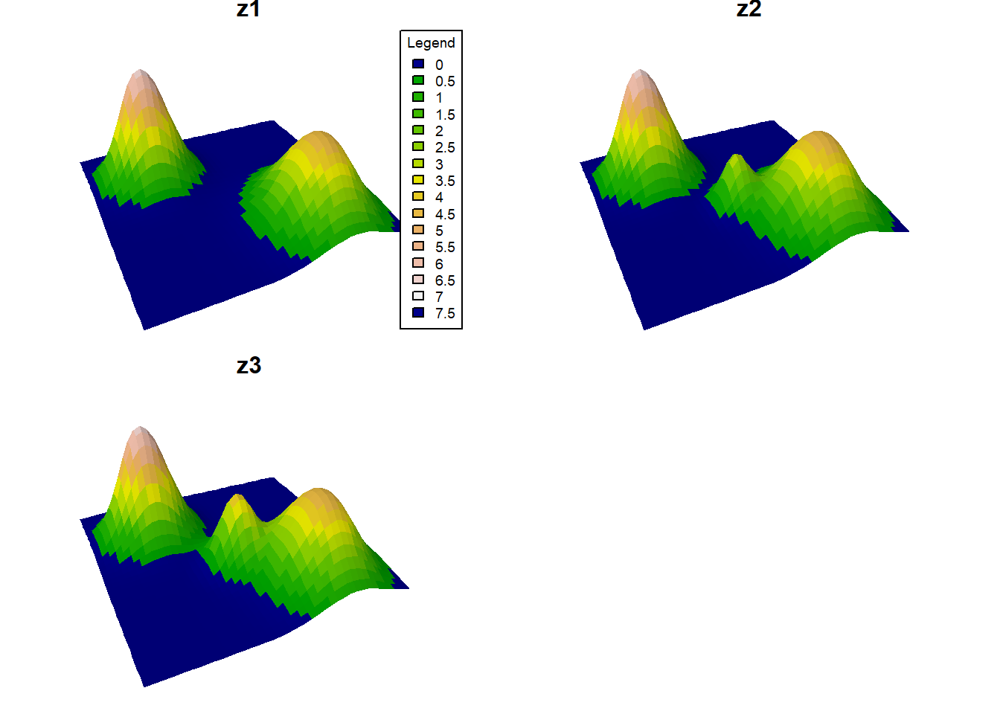
# Convert the landscapes to raster bricks
# One RasterBrick with one layer per time slice.
rb <- brick(lapply(l, raster))
plot(rb)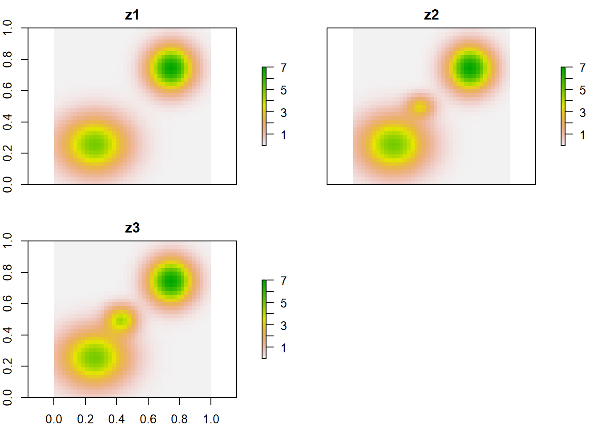
# Apply sea level cuts to the landscapes
selev <- c(1, 2, 1)
ls <- l
for (zi in 1:3) {
# Cells at or below sea level become water (NA).
ms <- ls[[zi]] <= selev[zi]
ls[[zi]][ms] <- NA
}
rb <- brick(lapply(ls, raster))
plot(rb, col = viridis(255))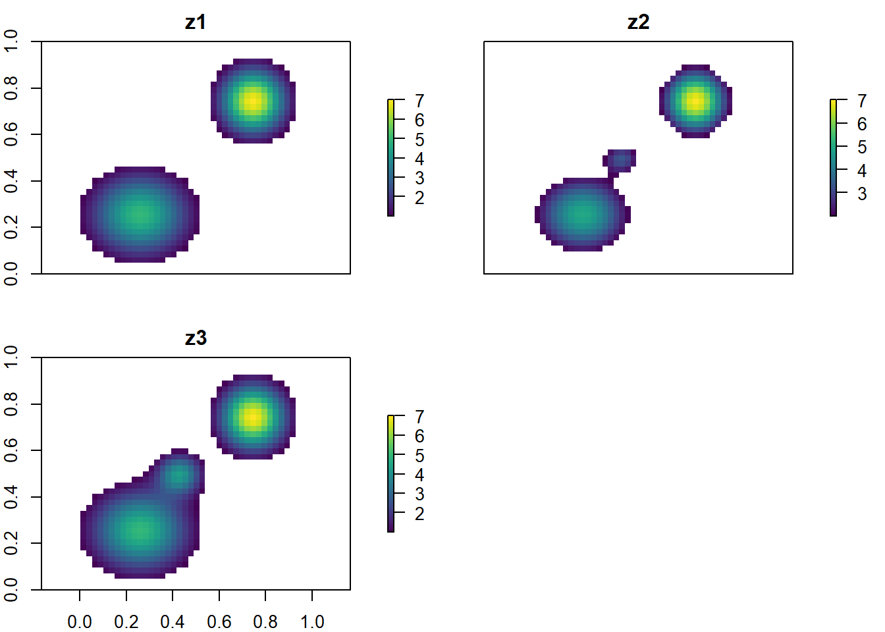
Random Landscapes
Now let’s generate a more complex landscape with multiple peaks to add more details to our world.
noise <- random_lanscape(x, y, 20)
# Add stochastic topographic variation with 20 random peaks.
plot_persp(x, y, noise, main="Noise")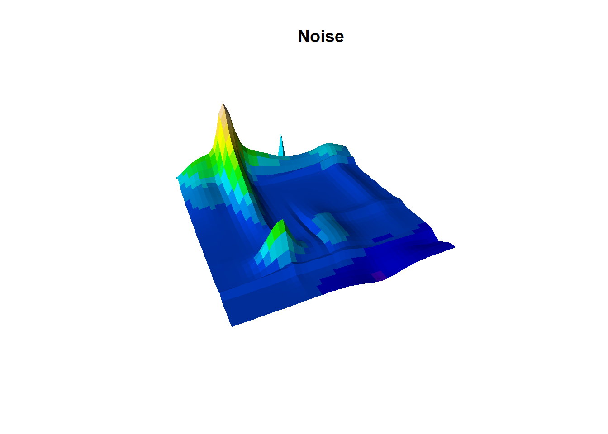
Now we add to our previous landscape
# add to previous landscape
plot_persp(x, y, (noise/10)+zf, main="Noise + zf")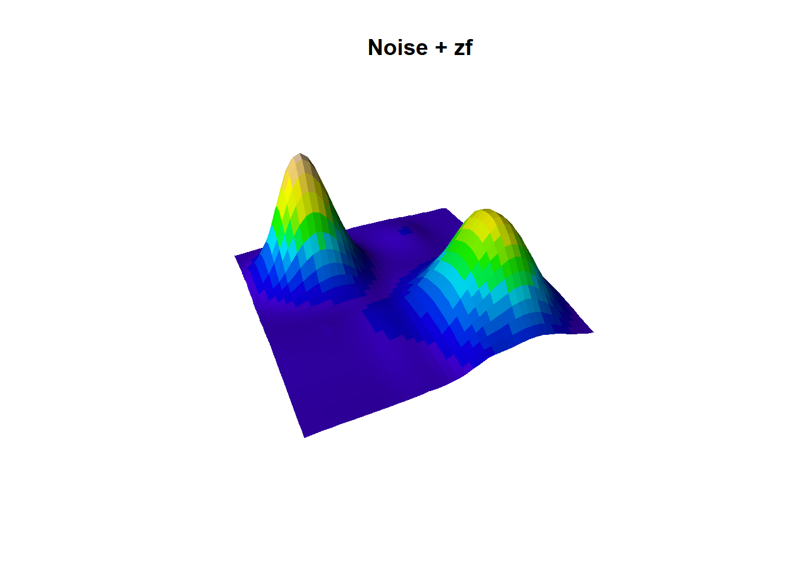
Experiment with it; there’s a lot of room when creativity your own world!
🏋💻 Exercise [max 10 min] Generate three alternative landscapes by changing the number of peaks, peak amplitude, or sea-level threshold. Which parameter produces the largest change in island connectivity?
plot_persp(x, y, (random_lanscape(x, y, 200)/10)+(zf), lcol=terrain.colors)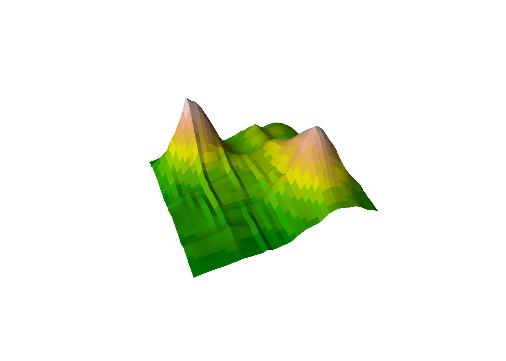
Creating an Archipelago
Let’s create an archipelago with multiple islands. We will use the same concept as before, but this time we will add more islands to the landscape. I.e 6, starting from the smallest to the largest island all spread evenly in a circle.
# Set the radius of the circle and the number of points
radius <- 17 # For a circle within -20:20 range
num_points <- 6
# Generate equally spaced angles in radians
angles <- seq(0, 2*pi, length.out = num_points + 1)[-7] # Exclude the last angle as it repeats the first
# Compute x and y coordinates based on angles (x = cos(angle) * radius, y = sin(angle) * radius)
x_values <- radius * cos(angles)
y_values <- radius * sin(angles)
# create islands using centroids as well as an island id mask for later
island_id <- 0 # island id's
elevation <- 0 # elevation
for (island_i in 1:num_points){
# island_i <- 1
# Each island gets larger amplitude, creating a size gradient around the ring.
z_i <- outer(x, y, gaussian_2d, x0=x_values[island_i], y0=y_values[island_i], sdx=2, sdy=2, a=island_i*100) # times 100 for meter
# plot_persp(x, y, z_i, main="z_i")
# Binary footprint used later to track island identity through sea-level change.
id_mask_temp <- (z_i>0.1)*island_i # this should be the lowest sealevel of all times
island_id <- island_id+id_mask_temp
elevation <- elevation+z_i
}
plot_persp(x,y, elevation)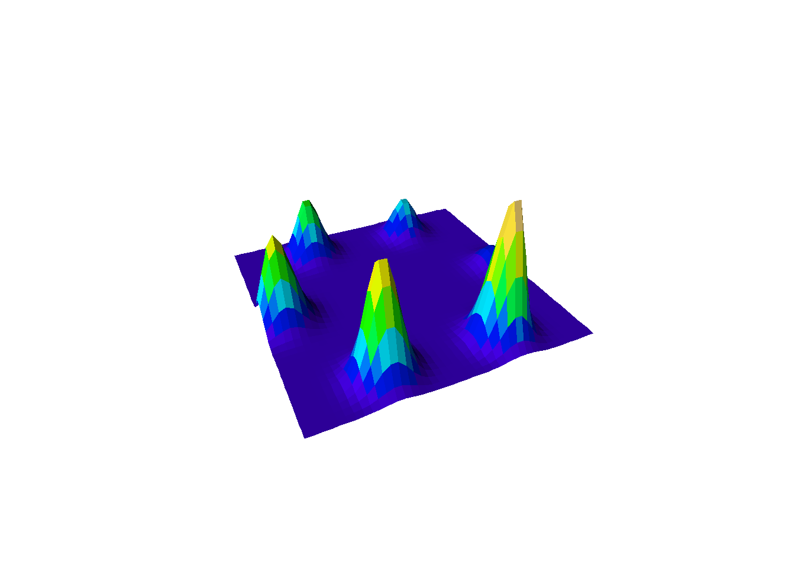
Like before, let’s add a temporal dynamics and sea level and temperature fluctuations. We will use a sine wave to simulate temperature and sea level changes over time. We will delay the sea level change by 1 time steps, as we expect the temperature to increase before the sea level rises.
# define number of timesteps
n_step <- 24
# cycles length in timesteps
cycles_length <- 5
# delay
delay <- 1
# Generate a sine wave between -1 and 1.
oscillatory_values <- sin(seq(0, 2*pi*cycles_length, length.out = n_step+delay))
#plot(oscillatory_values, type="l")
# Apply a lag so sea-level response trails temperature.
temp <- tail(oscillatory_values, n_step)
sealevel <- head(oscillatory_values, n_step)
plot(temp, type="l", col="red")
lines(sealevel, col="blue")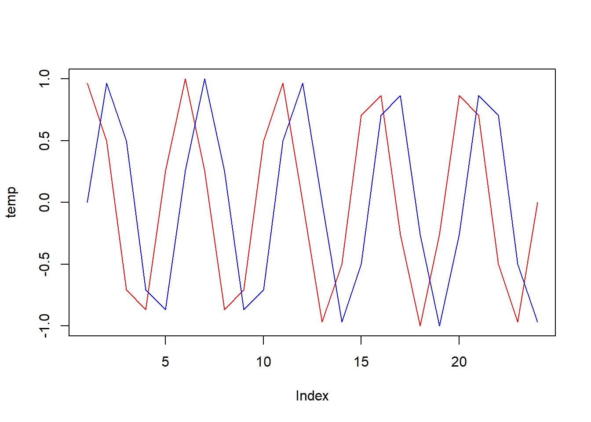
# scale
limts <- list(sealevel = c(1, 100), temperature = c(-2, 2))
# function to scale oscillatory values to a given range
scale_to_range <- function(values, low, high) {
return (((values + 1) / 2) * (high - low) + low)
}
# apply the scaling to each element in the list
# Rescale oscillation from [-1, 1] into model-specific physical units.
temp_vec <- scale_to_range(temp, limts$temperature[1], limts$temperature[2])
sealevel_vec <- scale_to_range(sealevel, limts$sealevel[1], limts$sealevel[2])Now let’s apply these changes over time to our landscape.
env <- list(elevation=list(), temp=list(), island_id=list())
# temperature at absolute 0m
temp_abs <- 27
for (t_i in 1:n_step){
# t_i <- 1
# Build a habitat mask: only cells above current sea level are habitable.
matrixNA <- elevation
matrixNA[] <- NA
matrixNA[elevation>sealevel_vec[t_i]] <- 1
#habitable_mask <- elevation>sealevel_vec[t_i]
# elevation
env$elevation[[t_i]] <- elevation*matrixNA
# temp
# Environmental lapse rate: temperature decreases with elevation.
env$temp[[t_i]] <- (temp_abs+temp_vec[t_i]) - (env$elevation[[t_i]]/100)*0.65
# island id
env$island_id[[t_i]] <- island_id*matrixNA
}
plot_multiple_persp(env$elevation, lcol=terrain.colors)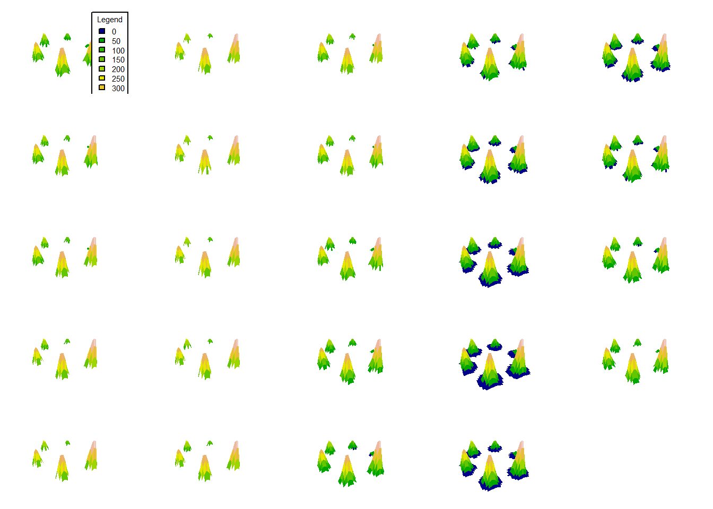
# Convert the landscapes to raster bricks
rball <- lapply(env, function(xa){
# Reverse time order to match expected Gen3sis timestep ordering.
revx <- rev(xa) # rever to fit into data format... happy to hear your feedback here
lapply(revx, function(xaxa){
# Extend raster boundaries by 0.5 so cell centers align with integer grid coordinates.
raster(xaxa, xmn=min(x)-0.5, xmx=max(x)+0.5, ymn=min(y)-0.5, ymx=max(y)+0.5)
})
})Prepare gen3sis input
Okay, our landscape is almost ready to start getting some life on it! We will now prepare the gen3sis input using create_input_landscape, and run a simulation. We will use a config we prepared so that you can use it as a start and figure out what it is doing.
❓ Question [max 5 min] Before running the simulation, which settings in the config would you retune first if you doubled either spatial resolution or the number of time-steps?
# define cost function, crossing water as 4x as land sites
cost_function_water <- function(source, habitable_src, dest, habitable_dest) {
if(!all(habitable_src, habitable_dest)) {
# Penalize paths that cross water.
return(4)
} else {
# Slightly favor downhill movement over steep uphill movement.
elev_diff <- 1-(source["elevation"] - dest["elevation"])/600
return(elev_diff)
}
}
# create a gen3sis input
create_input_landscape(
landscapes = rball,
cost_function = cost_function_water,
output_directory = here::here("data", "landscapes", "hard_to_climb_easy_to_roll"),
directions = 8, # surrounding sites for each site
timesteps = paste0((n_step-1):0, "step"),
calculate_full_distance_matrices = TRUE,
verbose = T,
overwrite_output = T) # full distance matrix
exp1 <- run_simulation(
config = here::here("assets", "materials", "day2", "configs", "config_islands_simple_Day2Prac5.R"),
landscape = here::here("data", "landscapes", "myworld"),
output_directory = here::here("output", "outputs"),
verbose = 1
)Conclusion
Congratulations! You’ve successfully created your own world, shaped its terrain, and even made life thrive. Your world may not be ready for civilization just yet, but don’t worry—Rome wasn’t built in a day either. Keep experimenting and refining your creation. Well done, master world-builder! 🌍✨